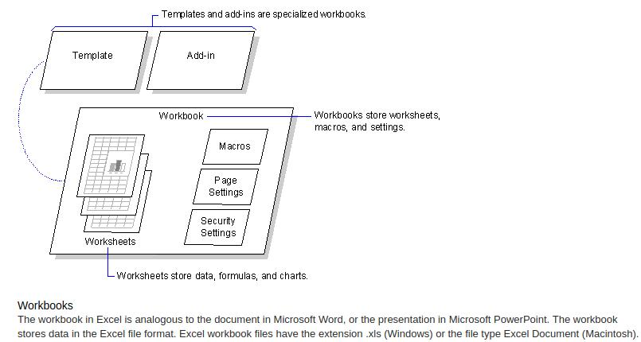
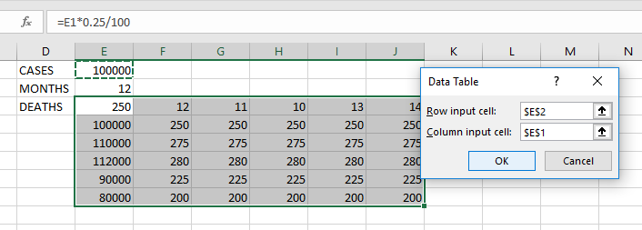
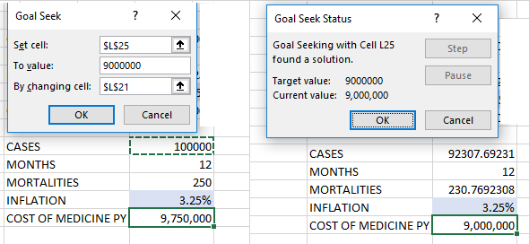
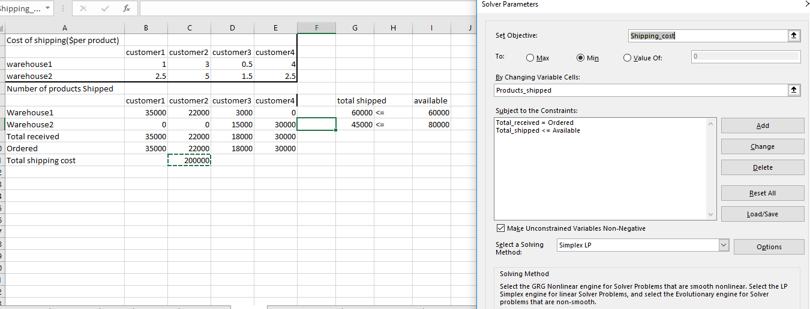
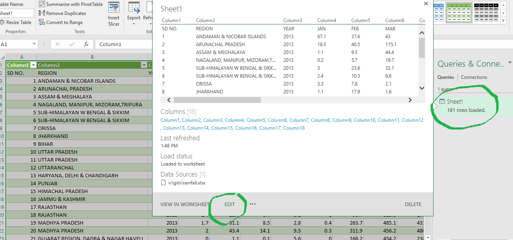
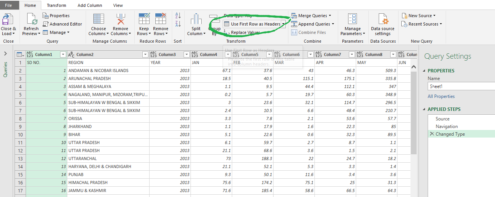

ADVANCED EXCEL-HACKS
Posted on Sep 1, 2017 at 12:00 PM

HELLO EXCEL 2016:
EXCEL has been in the Data Analysis,Reporting and Process Automation business for quiet some time now,it has been the main work horse of small and large business alike. In this blog we make sure we cover all the major features in Excel 2013 and 2016. Examples are hand picked so that you could use them in your day to day requiremes quiet easily.
Audience:
Finalcial Analyst,Stock Keepers,Merchandisers,Students..the list is endless.Any one who uses EXCEL spread sheet often,can make use and contribute to the topics here.
Sample Data Set:
We have a table containing Dengue cases and the deaths reported in India between 2013 to 2017,we would be using this in all our demos.
EXCEL 2016 LAYOUT:
Excel documents are called workbooks. A workbook is a collection of worksheets, chart sheets, and Visual Basic for Applications modules. The worksheet is the primary location for storing data in a workbook. Each worksheet can contain cells that store data and formulas, and charts, which present data graphically. Each cell and chart item can have associated formatting, such as fonts, colors, and layout options.
Let's cover all the important featuers that you would use in each tab.

The Home Tab has features like Format Painter,Wrap Text,Merge And Center,Conditional formatting,Number format & more. First,lets center align the numerical data that we have, then change the fromat to number,the first two records may have trailing spaces ,Trim the cell values using a excel function called Trim().

The region names are very long, use Wrap Text feature to fit the a desired column width. Find out how you could add thousand separator “,” on the CASES column.

Let's see the 10% best and worst regions in terms of number of cases. How would you do that? Hint:Go to Conditional Formatting Top/Bottom Rules. Once done,click on Manage Rules to change or delete a rule that you have already created
Say,you want to now find out the average number of cases and highlight the cells in red that have above average cases and rest of them green. Conditional formatting -> New rule -> Use formula to determine which cell to format -> Use a formula to determine which cells to format -> Add the below 2 rules:


Click on “Format as Table” to format this table layout and enable a new tab called Table Tools. You can hear Name the table, insert Pivot, Slicer etc. We will touch on these topics later.


The Formulas Tab has a lot going on in it, it is very important that you refer this- especially in your initial days of learning Excel.Let’s get familiar with the Formulas tab and the functionalities that it has to offer.
Sum up the total cases and death using fields defined as “NAME”. Select the table range and click on “CREATE FROM SELECTION” then select top rows,this adds named ranges with th table field as the NAME.Then click on Name Manager to see and modify the Names.


Type this in any cell "=SUM(CASES)",you will get a result of 470,572,which is same as "=SUM(D2:D176)". So what did we just do? Named range have their own benefits- you don’t have to redefine range when you copy paste formula, don’t have to change $ around the range and is easy to understand. Now try:=SUM(DEATH)

Copy and paste these formulas in range H3 to H9, and label them accordingly.
=COUNTA(CASES) =SUM(CASES)
=AVERAGE(CASES) =MAX(CASES)
=MIN(CASES) =COUNTIF(CASES,">0")
=H8/H3
Once done, do the same with DEATH named field.
Number format and table format to make your DATA STATS table look better. Play around with other features in this tab like Trace Precidence and Dependents and see what happens.
Exercise: Create a summary of the number of CASES by year having DEATH more than 0 and then more than 10.
 LINK TO MS OFFICE FUNCTIONS PAGE
LINK TO MS OFFICE FUNCTIONS PAGE
We are going to use the following features in DATA TAB, this is a very important tab and used often to import clean, and analyse data. Sort,Filter,What if Analysis,Group,Get Data & Forecast.
Let us first SORT the table by YEAR, CASES & REGION as show in the picture below.Next, select the table and click on the FILTER icon. What do you see? Play around with the filters using number and colour filter on the CASES field.

WHAT IF ANALYSIS:
This selection box has features that enable us to back directly into the assumptions that lead to a solution. Three kinds of What-If Analysis tools come with Excel: Scenarios, Goal Seek, and Data Tables.In addition to these we have a Solver. A Scenario is a set of values that Excel saves and can substitute automatically on your worksheet. You can create and save different groups of values as scenarios and then switch between these scenarios to view the different results. A data table is a range of cells in which you can change values in some in some of the cells and come up with different answers to a problem. If you have 2 variables to manipulate -Data table is what you need to try. Say we have total cases 100,000 per year ie 12 months and approximately 0.25% result in mortality. We can use data table to see how Mortality would change if other 2 independent vales were changed.
Use Goal Seek to find the result you want by adjusting an input value. In other words lets you find one value by changing one other cell.Here the cost of medicine in first case is Rupees 9.75 million ; what should you do to bring down the cost to 9.00 million? If a problem is far more complex for Goal Seek and has a lot of constants and other variables then we can use Solver.
To make sue of solver you must first build a data model.Define the problem you want to solve. In this example, let's find a solution for the following simple optimization problem.
Problem. Supposing, you are the Admin of a chain of hospitals and you are planning on providing care to N number of people depending on the total beds available. For this, you need to buy a all the medicines, equipment that costs $40,000, which should be paid by instalments within 12 months. How do you minimise the cost and handle maximum patients?
Goal: Calculate the minimal cost per service that will let you pay for the equipment & staff within the specified timeframe.
Further reading   IMPORT CSV /EXCEL DATA: Download the data set containing the rainfall data from the Data Set section of this blog. The main benefit of connecting to external data from Microsoft Excel is that you can periodically analyze this data in Excel without repeatedly copying the data, which is an operation that can be time-consuming and error-prone. After connecting to external data, you can also automatically refresh (or update) your Excel workbooks from the original data source whenever the data source is updated with new information.

You can load the data in sheet1 as is or set up a new connection. Once the new data is loaded as a table, it looks like in the bellow image. You will have to click Edit and tell excel that your data has headers. Alternatively, you can do this while loading any new table too. You could clean the data here, and any transformation you perform is logged and can be replayed.
 